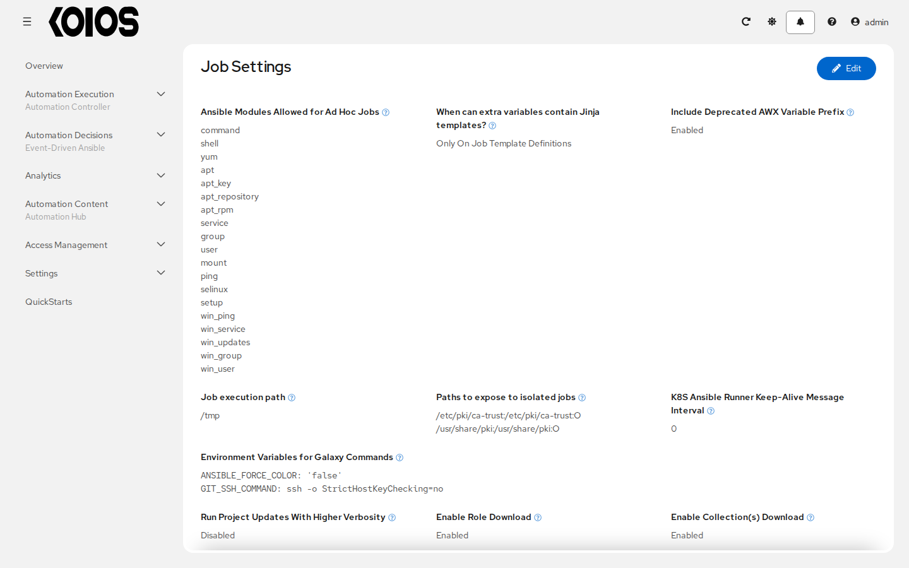
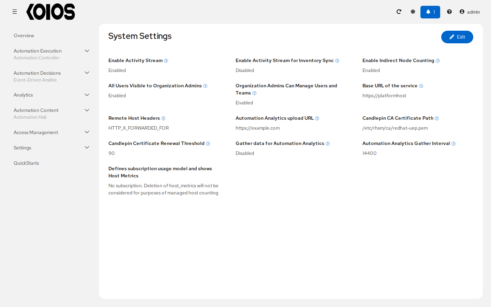
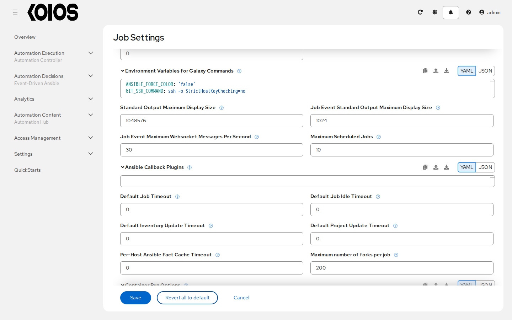

24. Automation controller Tips and Tricks
24.1. Using the automation controller CLI Tool
Automation controller has a full-featured command line interface. Refer to automation controller Command Line Interface documentation for configuration and usage instructions.
24.2. Changing the Admin Password
The admin user is a user of the platform gateway. The operator creates it once, with the password
of the Secret <platform>-admin-password (or of admin_password_secret), and does not change it
afterwards.
To change the password, edit the user in Access Management > Users, or run changepassword in
the gateway (for example, if the password is lost), with the name of the administrator (admin
unless spec.admin_user sets another):
kubectl exec -it -n <namespace> deploy/<platform>-gateway -c api -- \
aap-gateway-manage changepassword admin
The Secret keeps the initial password: after a change, it no longer holds the password in use.
To set rules for passwords, see Password policies.
24.3. Creating an Admin from the Command Line
To create another platform administrator (superuser) from the command line, run createsuperuser
in the gateway and enter the details when prompted:
kubectl exec -it -n <namespace> deploy/<platform>-gateway -c api -- \
aap-gateway-manage createsuperuser
24.4. Setting up a jump host to use with automation controller
Credentials supplied by automation controller will not flow to the jump host via ProxyCommand. They are only used for the end-node once the tunneled connection is set up.
To make this work, configure a fixed user/keyfile in the automation controller user’s SSH config in the ProxyCommand definition that sets up the connection through the jump host. For example:
Host tampa
Hostname 10.100.100.11
IdentityFile [privatekeyfile]
Host 10.100..
Proxycommand ssh -W [jumphostuser]@%h:%p tampa
You can also add a jump host to your automation controller instance through Inventory variables. These variables can be set at either the inventory, group, or host level. To add this, navigate to your inventory and in the variables field of whichever level you choose, add the following variables:
ansible_user: <user_name>
ansible_connection: ssh
ansible_ssh_common_args: '-o ProxyCommand="ssh -W %h:%p -q <user_name>@<jump_server_name>"'
24.5. View Ansible outputs for JSON commands when using automation controller
When working with automation controller, you can use the API to obtain the Ansible outputs for commands in JSON format.
To view the Ansible outputs, browse to:
https://<koios host>/api/controller/v2/jobs/<job_id>/job_events/
24.6. Locate and configure the Ansible configuration file
While Ansible does not require a configuration file, OS packages often include a default one in /etc/ansible/ansible.cfg for possible customization. In order to use a custom ansible.cfg file, place it at the root of your project. Automation controller runs ansible-playbook from the root of the project directory, where it will then find the custom ansible.cfg file. An ansible.cfg anywhere else in the project will be ignored.
To learn which values you can use in this file, refer to the configuration file on github.
Using the defaults are acceptable for starting out, but know that you can configure the default module path or connection type here, as well as other things.
Automation controller overrides some ansible.cfg options. For example, automation controller stores the SSH ControlMaster sockets, the SSH agent socket, and any other per-job run items in a per-job temporary directory that is passed to the container used for job execution.
24.7. View a listing of all ansible_ variables
Ansible by default gathers “facts” about the machines under its management, accessible in Playbooks and in templates. To view all facts available about a machine, run the setup module as an ad hoc action:
ansible -m setup hostname
This prints out a dictionary of all facts available for that particular host. For more information, refer to: https://docs.ansible.com/ansible/playbooks_variables.html#information-discovered-from-systems-facts
24.8. The ALLOW_JINJA_IN_EXTRA_VARS variable
Setting ALLOW_JINJA_IN_EXTRA_VARS = template only works for saved job template extra variables. Prompted variables and survey variables are excluded from the ‘template’. This parameter has three values: template to allow usage of Jinja saved directly on a job template definition (the default), never to disable all Jinja usage (recommended), and always to always allow Jinja (strongly discouraged, but an option for prior compatibility).
Set it in Settings > Automation Execution > Job, field When can extra variables contain Jinja templates? (click Edit to change it):

24.9. Using execution environments
See Execution Environments in the User Guide.
24.10. Configuring the public URL for notifications
Open Settings > Automation Execution > System and verify Base URL of the service (TOWER_URL_BASE). Set it to the public HTTPS URL users use to reach Koios Automation Platform, for example https://koios.example.com, and save the settings. You can also inspect or configure it at /api/controller/v2/settings/system/. See System Settings.

The upstream default is https://platformhost. Verify the effective value after installation rather than assuming that notification links already use the public platform URL.
24.11. Launching Jobs with curl
Launching jobs with automation controller API is simple. Here are some easy to follow examples using the curl tool.
Assuming that your Job Template ID is ‘1’, your automation controller IP is 192.168.42.100, and that admin and awxsecret are valid login credentials, you can create a new job this way:
curl -f -k -H 'Content-Type: application/json' -XPOST \
--user admin:awxsecret \
http://192.168.42.100/api/controller/v2/job_templates/1/launch/
This returns a JSON object that you can parse and use to extract the ‘id’ field, which is the ID of the newly created job.
You can also pass extra variables to the Job Template call, such as is shown in the following example:
curl -f -k -H 'Content-Type: application/json' -XPOST \
-d '{"extra_vars":{"foo":"bar"}}' \
--user admin:awxsecret http://192.168.42.100/api/controller/v2/job_templates/1/launch/
You can view the live API documentation by logging into http://192.168.42.100/api/ and browsing around to the various objects available.
Note
The extra_vars parameter accepts a JSON object directly. The template must allow the supplied variables through its survey or Prompt on launch setting for variables; otherwise launch overrides can be ignored.
24.12. Dynamic Inventory and private IP addresses
Use the current amazon.aws.aws_ec2 inventory plugin options to choose the connection address. Open Automation Execution > Infrastructure > Inventories, select the inventory, open Sources, and edit its Amazon EC2 source. In Source variables, set:
compose:
ansible_host: private_ip_address
Save the source and sync it. The plugin discovers instances according to the credentials, regions and filters configured for the source; an Elastic IP is not a requirement for discovering a VPC instance. Inspect an imported host’s variables to verify ansible_host before running a job.
The execution node or container group pod that runs the job needs network connectivity to the selected private addresses. The controller itself does not have to reside in the VPC.
24.13. Filtering instances returned by the dynamic inventory sources in automation controller
By default, the dynamic inventory sources in automation controller (AWS, Google, etc) return all instances available to the cloud credentials being used. They are automatically joined into groups based on various attributes. For example, AWS instances are grouped by region, by tag name and value, by security groups, etc. To target specific instances in your environment, write your playbooks so that they target the generated group names. For example:
---
- hosts: tag_Name_webserver
tasks:
...
You can also use the Limit field in the Job Template settings to limit a playbook run to a certain group, groups, hosts, or a combination thereof. The syntax is the same as the --limit parameter on the ansible-playbook command line.
You may also create your own groups by copying the auto-generated groups into your custom groups. Make sure that the Overwrite option is disabled on your dynamic inventory source, otherwise subsequent synchronization operations will delete and replace your custom groups.
24.14. Using an unreleased module from Ansible source with automation controller
If there is a feature that is available in the latest Ansible core branch that you would like to leverage with your automation controller system, making use of it in automation controller is fairly simple.
First, determine which is the updated module you want to use from the available Ansible Core Modules or Ansible Extra Modules GitHub repositories.
Next, create a new directory, at the same directory level of your Ansible source playbooks, named /library.
Once this is created, copy the module you want to use and drop it into the /library directory–it will be consumed first over your system modules and can be removed once you have updated the stable version via your normal package manager.
24.15. Using callback plugins with automation controller
Ansible has a flexible method of handling actions during playbook runs, called callback plugins. You can use these plugins with automation controller to do things like notify services upon playbook runs or failures, send emails after every playbook run, etc. For official documentation on the callback plugin architecture, refer to: http://docs.ansible.com/developing_plugins.html#callbacks
Note
Automation controller does not support the stdout callback plugin because Ansible only allows one, and it is already being used by automation controller for streaming event data.
You may also want to review some example plugins, which should be modified for site-specific purposes, such as those available at: https://github.com/ansible/ansible/tree/devel/lib/ansible/plugins/callback
To use these plugins, put the callback plugin .py file into a directory called callback_plugins alongside your playbook in your project. To search additional directories, enter their paths as a YAML list (one - /path item per line) or a JSON array in the Ansible Callback Plugins field of Settings > Automation Execution > Job (the field appears when you click Edit). Automation controller passes them to Ansible as ANSIBLE_CALLBACK_PLUGINS, so the paths must exist inside the execution environment that runs the job:

Note
To have most callbacks shipped with Ansible applied globally, you must add them to the callbacks_enabled option (callback_whitelist in older Ansible versions) of your ansible.cfg. If you have a custom callbacks, refer to the Ansible documentation for Enabling callback plugins.
24.16. Connecting to Windows with winrm
By default automation controller attempts to ssh to hosts. You must add the winrm connection info to the group variables to which the Windows hosts belong. To get started, edit the Windows group in which the hosts reside and place the variables in the source/edit screen for the group.
To add winrm connection info:
Edit the properties for the selected group by clicking on the button to the right of the group name that contains the Windows servers. In the “variables” section, add your connection information as such: ansible_connection: winrm
Once done, save your edits. If Ansible was previously attempting an SSH connection and failed, you should re-run the job template.
24.17. Importing existing inventory files and host/group vars into automation controller
To import an existing static inventory and the accompanying host and group vars into automation controller, your inventory should be in a structure that looks similar to the following:
inventory/
|-- group_vars
| `-- mygroup
|-- host_vars
| `-- myhost
`-- hosts
To import these hosts and vars, run the awx-manage command:
awx-manage inventory_import --source=inventory/ \
--inventory-name="My automation controller Inventory"
If you only have a single flat file of inventory, a file called ansible-hosts, for example, import it like the following:
awx-manage inventory_import --source=./ansible-hosts \
--inventory-name="My automation controller Inventory"
In case of conflicts or to overwrite an inventory named “My automation controller Inventory”, run:
awx-manage inventory_import --source=inventory/ \
--inventory-name="My automation controller Inventory" \
--overwrite --overwrite-vars
If you receive an error, such as:
ValueError: need more than 1 value to unpack
Create a directory to hold the hosts file, as well as the group_vars:
mkdir -p inventory-directory/group_vars
Then, for each of the groups that have :vars listed, create a file called inventory-directory/group_vars/<groupname> and format the variables in YAML format.
Once broken out, the importer will handle the conversion correctly.